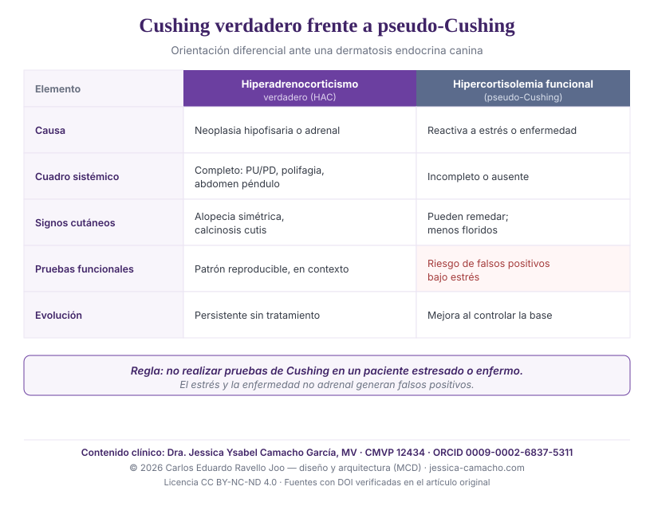

Hiperadrenocorticismo canino y dermatología: manifestaciones cutáneas y diagnóstico diferencial entre Cushing verdadero e hipercortisolemia funcional
Resumen
Antecedentes. El hiperadrenocorticismo (HAC) es una de las endocrinopatías que con mayor frecuencia se expresa a través de la piel; en una proporción de pacientes, las lesiones cutáneas son el único motivo de consulta.1 La hipercortisolemia sostenida de origen no adrenal —asociada a estrés o enfermedad concurrente— puede reproducir parte del cuadro y, además, alterar las pruebas endocrinas, lo que plantea un problema diagnóstico relevante.2
Objetivo. Sintetizar las manifestaciones dermatológicas del HAC canino, su mecanismo fisiopatológico de inmunosupresión cutánea, y proponer una guía práctica de diagnóstico diferencial entre el síndrome de Cushing verdadero y la hipercortisolemia funcional (pseudo-Cushing).
Puntos clave. La dermatosis del HAC se caracteriza por alopecia bilateral simétrica no pruriginosa, piel fina e hipotónica, comedones, calcinosis cutis, hiperpigmentación, mala cicatrización y, con frecuencia, infecciones oportunistas recurrentes —pioderma, demodicosis del adulto, malasseziosis— por inmunosupresión glucocorticoidea.134 El diagnóstico se sostiene en la integración de los signos sistémicos y cutáneos con pruebas funcionales interpretadas en contexto; las pruebas no deben realizarse en pacientes estresados o con enfermedad intercurrente por riesgo de falsos positivos.2
Conclusión. En el perro con dermatosis endocrina compatible, la distinción entre HAC verdadero y pseudo-Cushing es clínica antes que de laboratorio: depende del reconocimiento del cuadro completo y de la secuencia diagnóstica correcta.
Palabras clave: hiperadrenocorticismo canino; síndrome de Cushing; pseudo-Cushing; hipercortisolemia funcional; dermatosis endocrina; alopecia bilateral simétrica; calcinosis cutis; demodicosis del adulto; diagnóstico diferencial.
1. Introducción: la piel como ventana de la endocrinopatía
Punto de partida En el hiperadrenocorticismo canino, las lesiones dermatológicas pueden preceder a los signos sistémicos clásicos e, incluso, constituir el único motivo de consulta. Reconocer el patrón cutáneo permite sospechar la endocrinopatía antes de que el síndrome esté completamente expresado.1
Las dermatosis endocrinas comparten un rasgo que las hace clínicamente engañosas: su evolución es crónica y su expresión inicial, inespecífica. El hiperadrenocorticismo (HAC) es un ejemplo paradigmático. En una serie de diez perros, las lesiones cutáneas fueron el único signo de presentación del HAC, sin la poliuria-polidipsia ni la polifagia que el clínico espera encontrar.1 Esto obliga a mantener al HAC dentro del diagnóstico diferencial de toda dermatosis crónica, alopécica y no pruriginosa, incluso en ausencia del cuadro sistémico completo.
El interés de esta revisión es doble: describir qué busca el clínico en la piel del paciente con HAC, y precisar cómo distinguir el HAC verdadero de la hipercortisolemia funcional que el estrés crónico o la enfermedad concurrente pueden generar —una distinción con consecuencias terapéuticas directas.
2. Manifestaciones dermatológicas del hiperadrenocorticismo
Cuadro cutáneo La dermatosis del HAC es típicamente una alopecia bilateral simétrica no pruriginosa que respeta la cabeza y las extremidades distales, acompañada de piel fina e hipotónica, comedones, hiperpigmentación, mala cicatrización y, en casos avanzados, calcinosis cutis; la pioderma no pruriginosa es un hallazgo frecuente.1
El exceso crónico de glucocorticoides actúa sobre la piel en varios planos simultáneos: detiene el ciclo folicular en telógeno —produciendo la alopecia—, adelgaza la epidermis y la dermis, altera la síntesis de colágeno y compromete la cicatrización. El resultado clínico es reconocible:
- Alopecia bilateral simétrica no pruriginosa, de distribución troncal, que respeta cabeza y extremidades distales.1
- Piel fina, hipotónica y poco elástica, con venas superficiales prominentes y tendencia a la formación de hematomas, especialmente notoria en la venopunción.1
- Comedones e hiperpigmentación, particularmente en abdomen y zonas de fricción.
- Calcinosis cutis: depósito de sales de calcio en la dermis (frecuente en cuello dorsal e ingle), signo menos común pero altamente sugestivo de HAC; en una serie de 46 casos de calcinosis cutis canina, el hiperadrenocorticismo —endógeno o iatrogénico— fue una de las asociaciones predominantes.17
- Mala cicatrización y heridas que no curan, secuela directa del efecto glucocorticoideo sobre la reparación tisular.1
- Infecciones cutáneas recurrentes —pioderma no pruriginosa, malasseziosis— por inmunosupresión (ver sección 3).
Un dato clínicamente relevante: las lesiones cutáneas del HAC pueden tardar varios meses en resolverse tras instaurar el tratamiento y, en ocasiones, empeoran de forma transitoria antes de mejorar.1 La ausencia de respuesta inmediata no invalida el diagnóstico.
3. Inmunosupresión cutánea e infecciones oportunistas
Mecanismo El exceso glucocorticoideo deprime la inmunidad celular y predispone a infecciones cutáneas oportunistas. La aparición de una demodicosis de inicio adulto es un marcador centinela: se asocia de forma significativa al hiperadrenocorticismo y al hipotiroidismo, por lo que obliga a investigar una endocrinopatía subyacente.3
La inmunosupresión es, junto con la alopecia, la consecuencia cutánea más importante del HAC. El cortisol atenúa la respuesta inmune celular y, con ella, el control de la flora cutánea habitual. Sobre esa base se instalan colonizadores oportunistas: la pioderma del HAC se interpreta como la consecuencia combinada de las alteraciones cutáneas y del efecto inmunosupresor de los glucocorticoides.1
El ejemplo centinela es la demodicosis de inicio adulto. En una serie de 122 perros, alrededor del 40 % presentó enfermedad concurrente, con asociación estadísticamente significativa al hiperadrenocorticismo y al hipotiroidismo; los autores recomiendan evaluar de forma sistémica a estos pacientes.3 De modo análogo, las guías de consenso establecen que el tratamiento eficaz de la dermatitis por Malassezia exige corregir la enfermedad predisponente, entre ellas el hiperadrenocorticismo.4 El cortisol en pelo, validado como biomarcador de exposición prolongada a glucocorticoides, ofrece una medida complementaria del fenómeno —aunque sin valor de corte diagnóstico individual.5 Conviene recordar, además, que el propio hiperadrenocorticismo puede deprimir las concentraciones de hormona tiroidea (síndrome del eutiroideo enfermo), lo que añade un nivel adicional de confusión a la interpretación endocrina de estos pacientes.6
4. Cushing verdadero frente a hipercortisolemia funcional (pseudo-Cushing)
Concepto clave El estrés crónico y la enfermedad no adrenal elevan el cortisol y pueden reproducir parte del cuadro cushingoide, pero no constituyen un hiperadrenocorticismo verdadero. La diferencia es mecanística —el HAC verdadero obedece casi siempre a una causa orgánica (neoplasia hipofisaria o adrenal)— y tiene consecuencias diagnósticas: el estrés genera falsos positivos en las pruebas funcionales.2
El término pseudo-Cushing describe una hipercortisolemia funcional, reactiva a un estímulo (estrés sostenido, enfermedad sistémica), sin lesión adrenal ni hipofisaria primaria. Su relevancia clínica es doble. Primero, reproduce signos cutáneos compatibles con HAC, lo que puede inducir a sospecha. Segundo, y más importante, altera las pruebas de cribado y confirmación: el consenso ACVIM advierte explícitamente que las pruebas para HAC no deben realizarse en un animal estresado o con enfermedad intercurrente, por el riesgo de falsos positivos.2
La consecuencia práctica es una regla de secuencia: antes de testear, el paciente debe estar clínicamente estable y libre, en lo posible, de estrés agudo y de enfermedad no adrenal activa. Un resultado positivo en un paciente estresado no confirma HAC; obliga a reevaluar el contexto.
5. Guía práctica: qué buscar en el paciente con sospecha
Aplicación clínica Ante una dermatosis crónica, alopécica y no pruriginosa, la sospecha de HAC se construye sobre la coexistencia de signos cutáneos compatibles y signos sistémicos de hipercortisolismo. La presencia del cuadro completo orienta hacia HAC verdadero; su ausencia, en un paciente estresado o enfermo, hacia hipercortisolemia funcional.
5.1. Hallazgos físicos a explorar en la consulta
En un paciente con sospecha, la exploración debe documentar de forma dirigida los siguientes signos:
- Dermatológicos: alopecia bilateral simétrica no pruriginosa (tronco, respetando cabeza y extremidades); piel fina, hipotónica, con venas prominentes; comedones e hiperpigmentación abdominal; calcinosis cutis (placas o nódulos firmes, a veces ulcerados); pioderma o demodicosis recurrente; heridas de cicatrización lenta; hematomas espontáneos o tras venopunción.13
- Sistémicos: poliuria-polidipsia; polifagia; distensión abdominal / abdomen péndulo; jadeo en reposo; debilidad y atrofia muscular; letargia; hepatomegalia a la palpación.
La clave interpretativa es la concordancia: cuantos más signos sistémicos acompañen a la dermatosis, mayor es la probabilidad de HAC verdadero. Una dermatosis compatible aislada, en un perro por lo demás sistémicamente sano pero sometido a estrés o enfermedad, debe hacer considerar primero la hipercortisolemia funcional.
5.2. Diferencias orientadoras entre Cushing verdadero y pseudo-Cushing
| Elemento | Hiperadrenocorticismo verdadero (HAC) | Hipercortisolemia funcional (pseudo-Cushing) |
|---|---|---|
| Causa | Orgánica: neoplasia hipofisaria (dependiente de hipófisis) o adrenal; iatrogénica. | Reactiva a estrés sostenido o enfermedad no adrenal; sin lesión primaria. |
| Cuadro sistémico | Completo y progresivo: PU/PD, polifagia, abdomen péndulo, atrofia muscular. | Incompleto o ausente; predominan los signos del estresor o de la enfermedad de base. |
| Signos cutáneos | Dermatosis endocrina establecida: alopecia simétrica, calcinosis cutis, infecciones recurrentes.17 | Pueden remedar el cuadro, habitualmente menos floridos y sin calcinosis cutis típica. |
| Pruebas funcionales | Patrón compatible y reproducible (LDDST, estimulación con ACTH, UCCR), interpretado en contexto.2 | Riesgo elevado de falsos positivos; por ello no deben realizarse bajo estrés o enfermedad activa.2 |
| Evolución | Persistente; no se resuelve sin tratamiento dirigido. | Tiende a normalizarse al controlar el estresor o resolver la enfermedad de base. |
| Imagen (ecografía adrenal) | Puede mostrar adrenomegalia bilateral o masa adrenal unilateral. | Sin hallazgos adrenales estructurales atribuibles. |

5.3. Secuencia diagnóstica sugerida
La secuencia que protege al paciente del sobrediagnóstico es ordenada: (1) sospecha clínica a partir de la concordancia de signos cutáneos y sistémicos; (2) estabilización y control —en lo posible— del estrés y de la enfermedad intercurrente antes de testear; (3) pruebas funcionales de cribado y confirmación interpretadas en contexto, nunca de forma aislada;2 (4) diferenciación de la forma dependiente de hipófisis frente a la adrenal mediante imagen y pruebas complementarias cuando se confirma el HAC. Un resultado de laboratorio que no concuerda con el cuadro clínico exige reevaluar el contexto antes que tratar.
6. Implicaciones clínicas
Conclusión En dermatología endocrina, la diferenciación entre Cushing verdadero y pseudo-Cushing es ante todo un ejercicio clínico: depende del reconocimiento del cuadro completo y de respetar la secuencia diagnóstica, no de una prueba aislada.
El hiperadrenocorticismo pertenece al grupo de enfermedades sistémicas que se anuncian en la piel antes de hacerse evidentes en el resto del organismo. Reconocer su patrón cutáneo —alopecia simétrica no pruriginosa, calcinosis cutis, infecciones oportunistas recurrentes— permite sospecharlo a tiempo. Pero la misma hipercortisolemia que daña la piel puede originarse en el estrés o en otra enfermedad, reproducir parte del cuadro y falsear las pruebas. La distinción entre una y otra situación no se delega en el laboratorio: se construye con la historia, la exploración y la secuencia correcta. Esta revisión es complementaria del análisis dirigido al propietario sobre el perro que se lame y pierde pelo, donde se aborda la cascada del estrés crónico a la piel.
Referencias
Literatura veterinaria revisada por pares. Cada referencia fue verificada de forma independiente en su fuente original (PubMed / editor).
- Zur G, White SD (2011). Hyperadrenocorticism in 10 dogs with skin lesions as the only presenting clinical signs. J Am Anim Hosp Assoc 47(6):419-427. doi:10.5326/JAAHA-MS-5623 · PMID 22058349
- Behrend EN, Kooistra HS, Nelson R, Reusch CE, Scott-Moncrieff JC (2013). Diagnosis of Spontaneous Canine Hyperadrenocorticism: 2012 ACVIM Consensus Statement (Small Animal). J Vet Intern Med 27(6):1292-1304. doi:10.1111/jvim.12192
- Pinsenschaum L, Chan DHL, Vogelnest L, Weber K, Mueller RS (2019). Is there a correlation between canine adult-onset demodicosis and other diseases? Vet Rec 185(23):729. doi:10.1136/vr.105388
- Bond R, et al. (2020). Biology, diagnosis and treatment of Malassezia dermatitis in dogs and cats: Clinical Consensus Guidelines of the WAVD. Vet Dermatol 31(1):28-74. doi:10.1111/vde.12809
- Park SH, Kim SA, Shin NS, Hwang CY (2016). Elevated cortisol content in dog hair with atopic dermatitis. Jpn J Vet Res 64(2):123-129. PMID 27506086
- Bolton TA, Panciera DL, Voudren CD, Crawford-Jennings MI (2024). Thyroid function tests during nonthyroidal illness syndrome and recovery in acutely ill dogs. J Vet Intern Med 38(1):111-122. doi:10.1111/jvim.16947
- Doerr KA, Outerbridge CA, White SD, Kass PH, Shiraki R, Lam AT, Affolter VK (2013). Calcinosis cutis in dogs: histopathological and clinical analysis of 46 cases. Vet Dermatol 24(3):355-361. doi:10.1111/vde.12026 · PMID 23565978

Dra. Jessica Ysabel Camacho García
ORCID 0009-0002-6837-5311 · Verificación profesional · Última revisión: 19 de junio de 2026